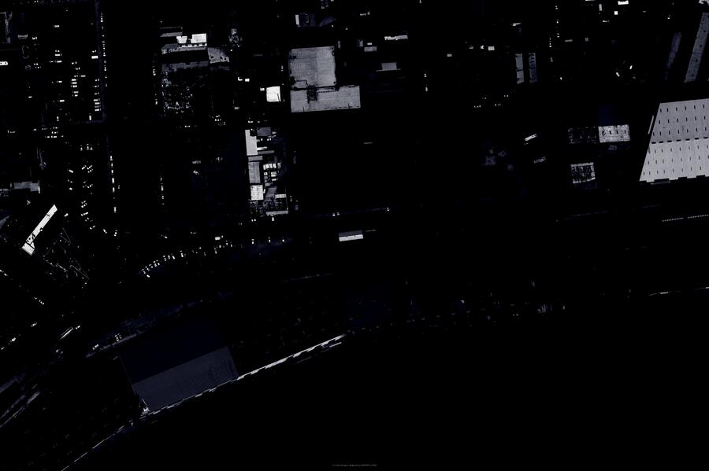

Site · Process
Landscape architecture is defined broadly and allows for many approaches to various scales of design. This studio focuses on site design that is the genesis of a rigorous process of site analysis, observation, simulation, and representation — a process that attempts to understand the site at multiple scales and through a variety of experiences. The studio engages the Faubourg-Marigny and Bywater neighborhoods of New Orleans, Louisiana. Outside of the Vieux Carré, these are some of the oldest and most colorful neighborhoods in the city — infinitely complex, and requiring clever methods of analysis to generate design proposals.“The site design process will come directly from your understanding of physical and social landscape conditions and will engage, obfuscate, and/or enhance perceived axioms.”

About the studio
LA 7002 — Graduate Design Studio — is the first-year graduate studio at Louisiana State University's Robert Reich School of Landscape Architecture. Taught by Bradley Cantrell across successive Spring semesters (2006–2012), the studio focused on site design in New Orleans' Faubourg-Marigny and Bywater neighborhoods, building design proposals from a rigorous process of observation, analysis, simulation, and representation.
Faculty: Bradley Cantrell, Assistant Professor of Landscape Architecture. Meeting: Monday, Wednesday, and Friday, 1:30–5:30.
This page documents the Spring 2010 iteration — the most complete record in the archive, including the full syllabus and four project briefs — presented as a multi-year course spanning 2006–2012.